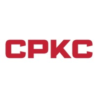
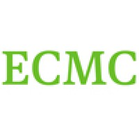
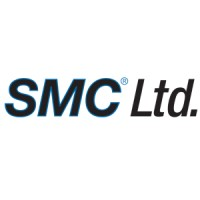

Professional Summary
IT Infrastructure Specialist with 10+ years leading enterprise systems automation,
endpoint configuration management, and multi‑cloud migrations. Proven track record
architecting and operating secure Windows and Linux environments at scale, driving
measurable productivity improvements through configuration, tuning, and lifecycle
management. Collaborative teammate across infrastructure, security, and application
groups with a focus on dependable operations, continuous process improvement, and
business continuity.
Recent Experience

Specialist, IS Infrastructure Platforms Automation
CPKC
- Architected, implemented, and maintained multi‑cloud configuration management for Windows and Linux servers, keeping thousands of endpoints secure and compliant.
- Led provisioning, software deployment, and lifecycle management across on‑prem platforms and all major cloud providers.
- Automated routine operational tasks to improve reliability and reduce manual effort across infrastructure teams.

Enterprise Desktop Support Technician
ECMC
- Administered SCCM 2012 (OSD, software updates, application deployment, reporting); maintained WSUS, IIS, MDT; upgraded SCCM servers and clients.
- Managed VMware Horizon View and led migrations from physical desktops to VDI, improving manageability and uptime.
- Packaged and deployed applications using ThinApp, SCCM, and AppDeploy Repackager; performed Windows XP to Windows 7 migrations and user state transfer.
- Administered Active Directory, Group Policy, and certificates; implemented and audited endpoint and web security controls (BlueCoat/WebPulse, McAfee Web Gateway).
- Implemented two‑factor authentication solutions (RSA, SecureAuth, Imprivata OneSign) and supported Microsoft Lync for IM and video conferencing.
- Supported Cisco IP telephony and conferencing; conducted DR/BCP testing; documented procedures and provided cross‑training via SharePoint.

IT Support Specialist
SMC Ltd
- Implemented an enterprise physical security system and built copper/fiber Ethernet networks.
- Supported industrial equipment using emulation and adapters for legacy protocols and connections.
- Served as primary IT operator for a medium‑sized facility, including PBX config, Symantec backup monitoring, and file server administration.